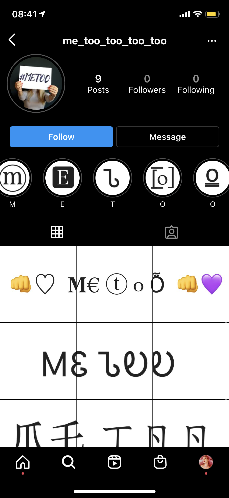
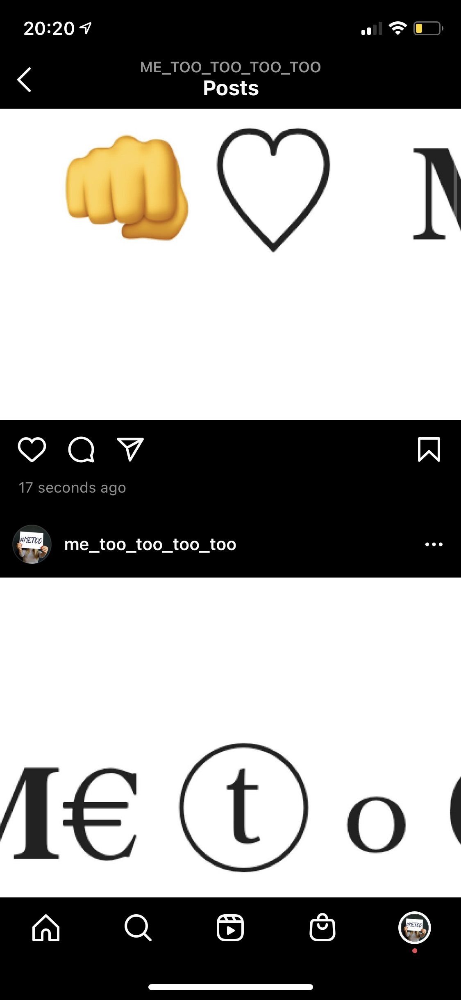

Web intervention that aimed at incorporating #Metoo movement into Instagram platform in a form of various typography instead of traditional photo/video instaposts and empowering video clips in the stories. In future I'd continue what I'm doing until Insta blocks me for using the videos.
Profile in the Instagram.
The way posts look one after another.
Screenshot of the Beyonce clip in stories